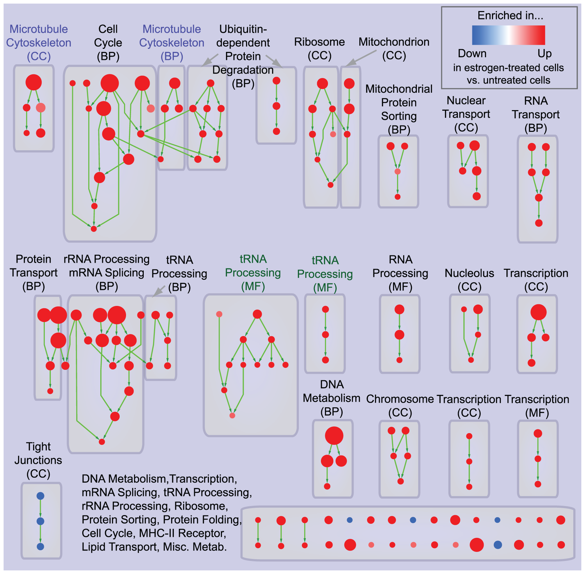
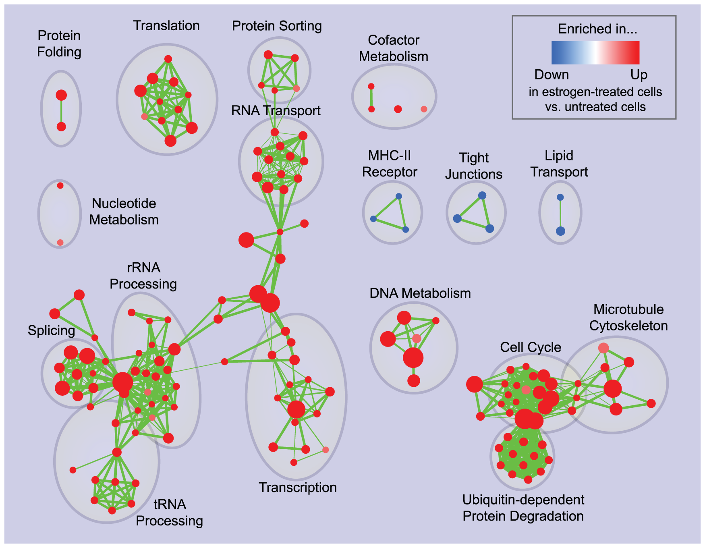
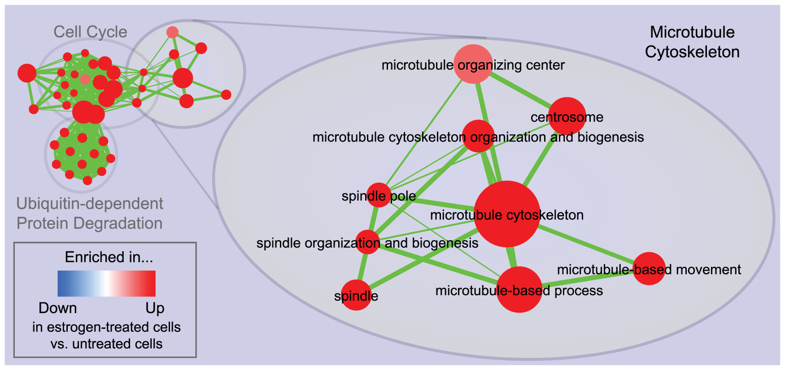
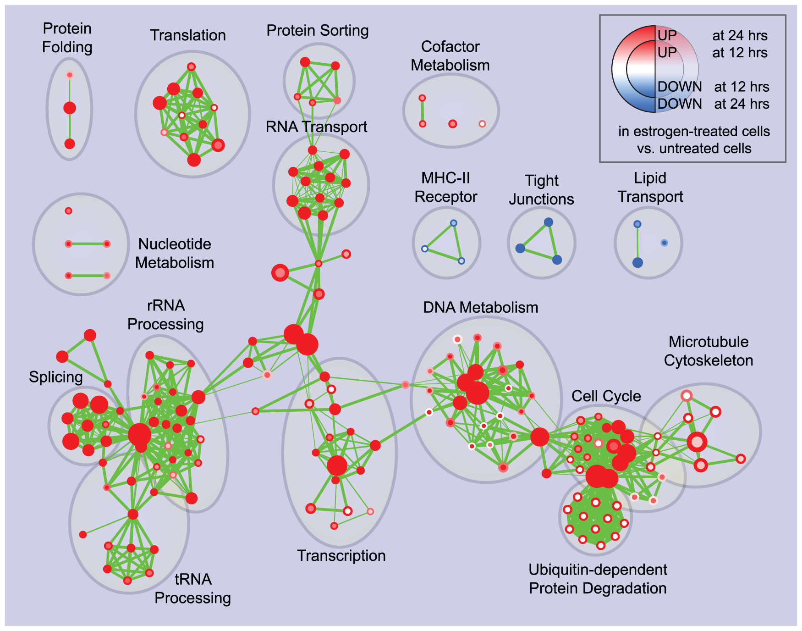
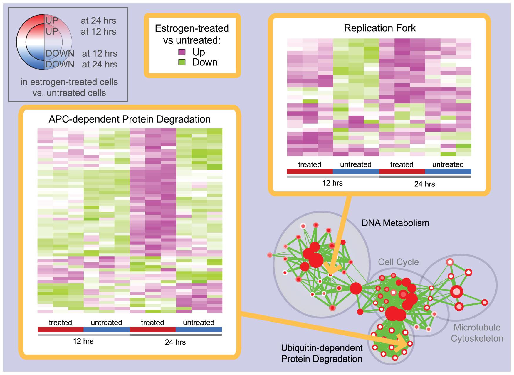

Enrichment Map
Enrichment Map is a
Cytoscape app
for functional enrichment visualization. Enrichment results have to be generated outside Enrichment Map,
using any of the available methods. Gene-sets, such as pathways and Gene Ontology terms, are organized into
a network (i.e. the "enrichment map"). In this way, mutually overlapping gene-sets cluster together, making
interpretation easier. Enrichment Map also enables the comparison of two different enrichment results in the
same map.
Documentation
Developer Resources
How to Cite
Image Gallery
-

Hierarchical visualization of enrichment results for estrogen treatment of breast cancer cells.
-

Enrichment map for estrogen treatment of breast cancer cells at 24 hours of culture.
-

Zoom in of the microtubule cytoskeleton cluster in the 24 hours estrogen treatment enrichment map.
-

Enrichment map for estrogen treatment of breast cancer cells at 12 and 24 hours of culture.
-

Heat-maps displaying gene-set expression patterns in the estrogen treatment experiment.
-

Enrichment map for early-onset colon cancer and overlap with known disease genes.